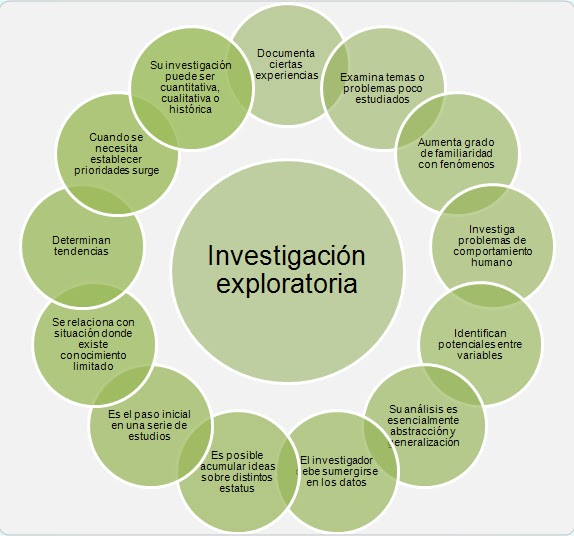

¿Qué es la Investigación Explorativa?
La investigación exploratoria, también conocida como investigación explorativa o investigación preliminar, es un tipo de investigación que se lleva a cabo cuando se explora un tema o problema poco conocido o poco investigado. El objetivo principal de este tipo de investigación es generar ideas, identificar tendencias o patrones, y familiarizarse con el tema o problema en cuestión.
Tambien se utiliza cuando existe poca información o conocimiento previo sobre un tema específico. Es un punto de partida para investigaciones más profundas y se enfoca en obtener una comprensión general y amplia del tema en lugar de buscar respuestas definitivas o conclusiones concluyentes.
Caracteristicas de la Investigación Explorativa:
- Descubrimiento: La investigación exploratoria se centra en la exploración y descubrimiento de nuevos conceptos, ideas o fenómenos. Se busca generar conocimiento inicial y capturar información relevante sobre el tema de estudio.
- Flexibilidad: La investigación exploratoria es flexible y adaptable. Permite al investigador ajustar y modificar el enfoque y las preguntas de investigación a medida que se obtiene nueva información y se adquiere una mejor comprensión del tema.
- Múltiples fuentes de datos: En la investigación exploratoria, se utilizan diversas fuentes de datos, como revisión de literatura, entrevistas, observaciones o análisis de documentos. Esto permite obtener diferentes perspectivas y enfoques para explorar el tema de estudio.
- Enfoque cualitativo: A menudo, la investigación exploratoria utiliza enfoques cualitativos, lo que significa que se busca comprender y describir fenómenos, opiniones o experiencias en profundidad. Se utilizan métodos como entrevistas abiertas, grupos focales o análisis de contenido para recopilar y analizar datos.
- Resultados descriptivos: En lugar de buscar conclusiones definitivas, la investigación exploratoria proporciona resultados descriptivos que ayudan a generar ideas, formular hipótesis o identificar patrones. Los resultados pueden servir como base para investigaciones posteriores más rigurosas y específicas.
¿Para que sirve la Investigación Explorativa?
La investigación exploratoria es especialmente útil en las etapas iniciales de un proyecto de investigación o cuando se aborda un tema poco conocido. Ayuda a identificar áreas de interés, aclarar preguntas de investigación y establecer la base para investigaciones posteriores más detalladas y específicas.
